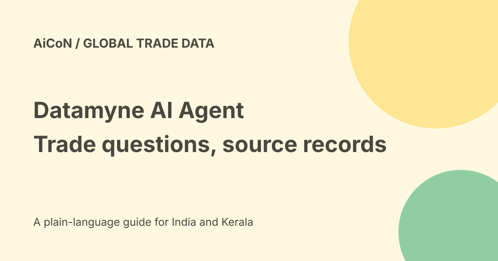

Datamyne AI Agent: trade questions and shipment evidence
Descartes announced the Datamyne AI Agent on 24 September 2026. It lets users ask trade-data questions in natural language inside the Datamyne platform, with visualizations and shipment records behind the answer. It is not a free consumer chatbot or a guarantee that every supplier, tariff or commercial risk has been checked.

What it does
The official release describes questions about suppliers, buyers, commodities, shipments and trade relationships. Users can refine a question and investigate related records without leaving the platform.
A sourcing team might look for changing import patterns or alternative suppliers. Those are research leads, not automatic approval to trade with a company.
Observed trade versus company claims
Descartes says the agent uses observed shipment activity rather than only self-reported profiles or general web content.
Shipment activity can show a recorded trade relationship. It does not establish product quality, financial health, legal compliance or whether a company can fulfil your next order.
Coverage numbers need context
The announcement says 230 markets and more than 500 million shipment records added annually. A separate Datamyne product article describes more than 190 countries and over 80 percent of global trade.
Markets and countries are different labels. Do not turn those figures into every country, every shipment or live worldwide customs access. Ask which data exists for your actual market, date and commodity.
Traceable answers
The release says dynamic views and drill-down records support generated findings. Open those records, compare the filters and inspect the time window before using the conclusion.
A citation or chart makes checking possible; it does not perform the check for you. Units, duplicate records, entity aliases and missing periods can affect totals.
The ninety-percent claim
Descartes advertises research-time reductions up to ninety percent, depending on user experience and query complexity. FreightWaves reports the same qualification and notes the announcement did not give details of the calculation.
This is a vendor benefit claim, not an independent guarantee or a promised saving for your team. Measure your own tasks against a defined baseline.
How an authorised team could evaluate it
- Confirm account access and the specific agent entitlement.
- Define a trade question with dates and geography.
- Specify the commodity and relevant classification.
- Ask in plain language and inspect any assumed filters.
- Open supporting shipment records and charts.
- Compare the answer with a known reference query.
- Check aliases, units, coverage gaps and freshness.
- Refine the question and record changed assumptions.
- Use a reviewed result in the intended business process.
No platform account, demo request or trade query was submitted for this guide.
Tariffs and landed cost are separate checks
The wider Datamyne article describes tariff insights, but that does not make every agent answer a current customs ruling.
Confirm classification, origin, dates, trade agreements and applicable duties with current official sources and qualified advisers where needed. A shipment price is not automatically the total landed cost.
Supplier decisions need more evidence
Trade records can help shortlist suppliers or detect changes. Inspect sanctions, product specifications, quality assurance, payment terms and actual capacity separately.
An apparent drop in recorded shipments can reflect coverage or reporting timing rather than a business failure. Keep uncertainty in the report.
Access, price and India
The agent is embedded in an enterprise trade-intelligence product. No consumer free tier, complete public agent tariff or INR quote was established by the checked sources.
Ask whether the feature is included in your contract and which countries, export functions and usage limits it covers. The global coverage claim does not confirm every Indian shipment dataset, processing location or local compliance requirement.
Sharing and commercial data
Review data licence and export rights before circulating a table outside the account's audience. A record available to a licensed user is not automatically approved for public republication.
Do not contact companies or make sourcing commitments solely because an AI list recommends them. Keep research separate from outreach and purchasing.
What changed since the original post?
We retain the vendor qualification on time savings, distinguish markets from countries and explain how to check supporting shipment records. Commercial access and India coverage remain account-specific.
Frequently asked questions
Is it a free general AI chat?
No such access was established.
Does a record prove supplier quality?
No.
Is ninety percent guaranteed?
No. It is a qualified vendor claim.
Sources: Official Descartes announcement · Official Datamyne coverage and use cases · Independent launch reporting and claim limits. Checked 7 October 2026.